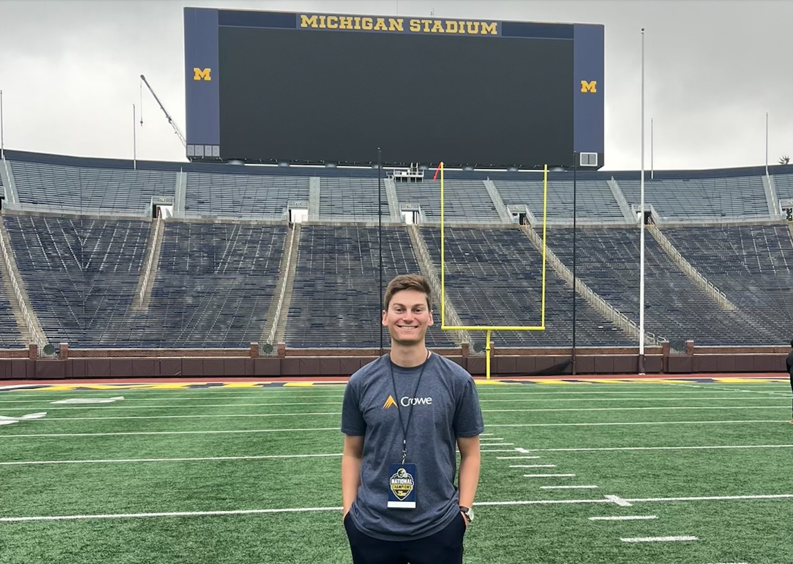
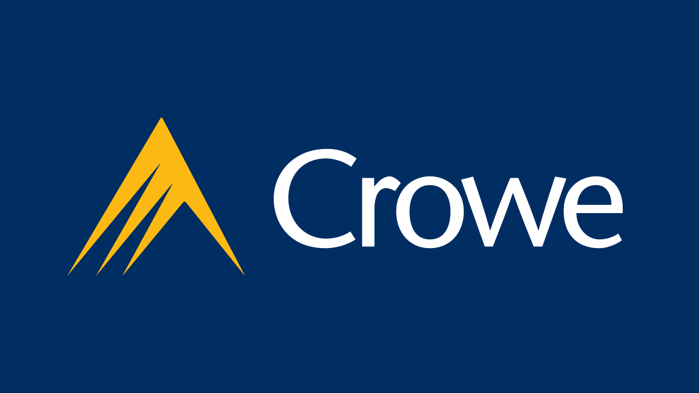
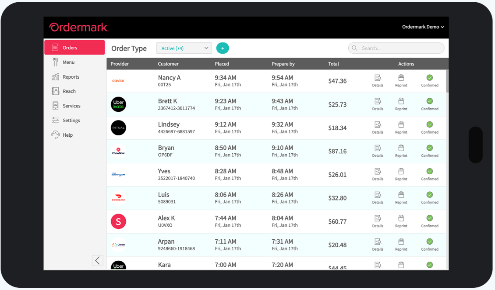
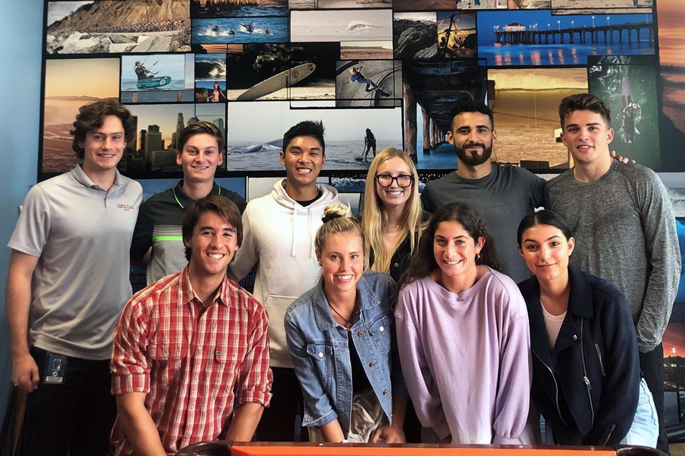
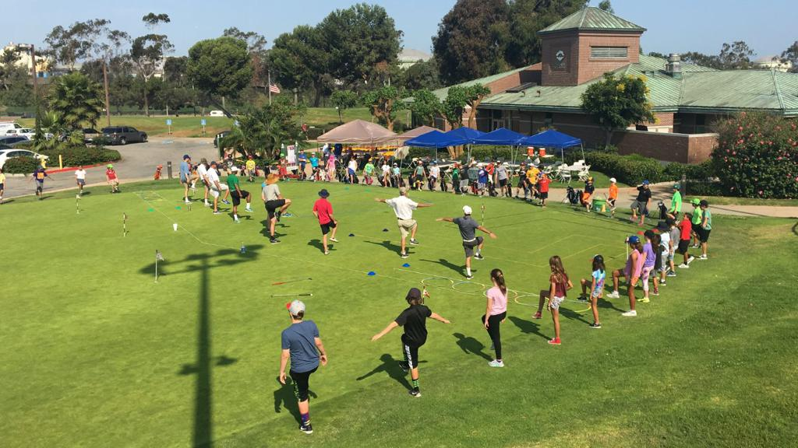
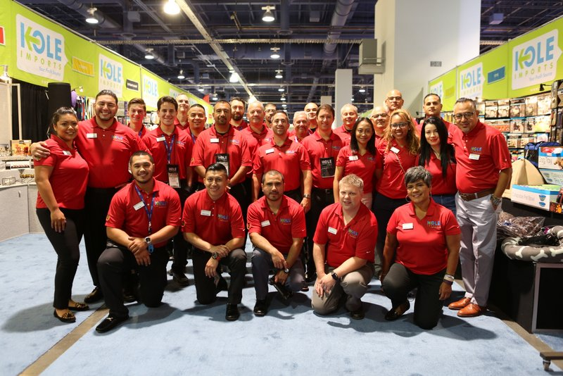

Crowe LLP
Aug 2022 - Present
Position: Staff Technology Consultant
Role description and responsibilities:
- Identified key risk areas of a global delivery company’s internal controls with potential to cause major misreported financials, and aided the firm in establishing the secure use of ~30 key reports and automated processes utilized for daily operations
- Advised a ticket resale and exchange company on IT systems strategy, including proper procedures of implementing changes, appropriate access for firm employees, and applicable due diligence when outsourcing work to third party organizations
- Closely monitored project budgets and developed weekly models tracking progress as well as costs versus expected revenue to share with senior leadership, resulting in earlier ability to make staffing/billing adjustments that lead to greater profit margins
Crowe LLP
Summer 2021
Position: Technology Consulting Intern
Role description and responsibilities:
- Executed a variety of technology audits to evaluate the effectiveness and risk associated with the information systems in-use by Crowe clients in the Technology, Media, and Telecommunications field, resulting in improved systems maintenance
- Showcased the utility of Robotic Process Automation tools in the consulting industry through the production of a video demonstration, which is leveraged by leaders in the marketing of additional optimization services to existing clients
Ordermark
Summer 2020
Position: Client Specialist Intern
Role description and responsibilities:
- Utilized Salesforce and various communication forms to interact with the tech startup’s clients, and handle the increased number of concerns resulting from the COVID-19 quarantine shutdowns
- Collaborated with coworkers ranging from interns to department heads to identify which internal tools generated the greatest lag in the daily tasks of the customer support team and the online menu editing team
- Designed creative new tools and features to effectively solve problems highlighted by coworker interviews and created a presentation detailing the benefits of such tools for the reference of the head of product design
JR286
Summer 2019
Position: Demand Planning Intern
Role description and responsibilities:
- Analyzed the monthly sales data in order to highlight which products the company had difficulty forecasting with accuracy
- Presented results of forecast variance analysis to a group of coworkers and company executives
- Supported Operations Department with data archiving and organization which helped accelerate the process of accessing important files and data sheets
Good Swings Happen
Summer 2018
Position: Assistant Coach
Role description and responsibilities:
- Collaborated with fellow coaches to plan a weekly schedule and then executed outlined activities
- Recorded progress of campers and discussed future goals with them and their parents
Kole Imports
Summer 2016
Position: Sales Representative
Role description and responsibilities:
- Contacted dormant accounts of buyers who had not purchased goods for an extended period of time
- Established long-term relations with clients who continued to purchase goods after the conclusion of my work at the firm
- Marketed to potential new customers alongside team members at the ASD Trade Show in Las Vegas, Nevada